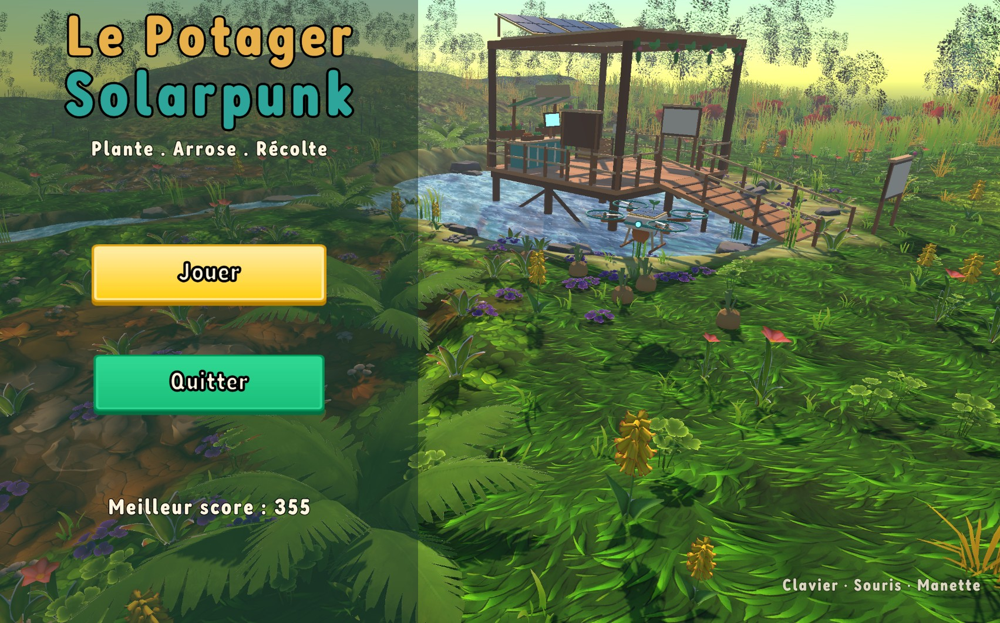
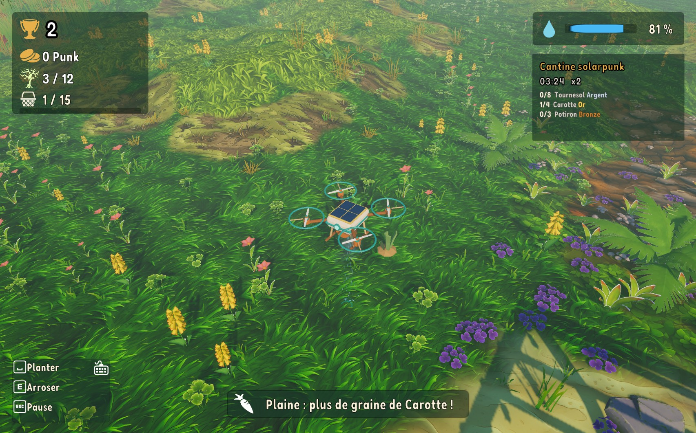
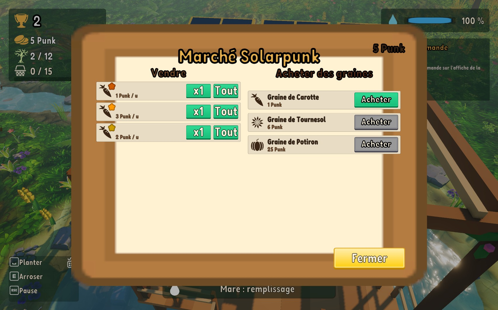

Le Potager Solarpunk
Projet de synthèse individuel, BUT2 · Unity 6.3 (URP) · Navigateur & Windows · 2 semaines

Contexte & sujet
Aux commandes d'un drone horticole alimenté au soleil, le joueur survole un potager solarpunk. Il plante, arrose et récolte des carottes, tournesols et potirons, revend ses récoltes au marché d'une base sur pilotis, et doit livrer une commande de 15 récoltes le plus vite possible.
Projet de synthèse individuel sur 2 semaines (28 octobre – 13 novembre 2026), IUT Informatique Graphique — 2ème année.
Jouer sur itch.io ↗Objectifs visés
- Concevoir une boucle de jeu complète et équilibrée en solo
- Implémenter une économie simple (qualité Bronze/Argent/Or, marché)
- Gérer la difficulté croissante sans rendre la partie injouable
- Publier un build WebGL jouable directement dans le navigateur
- Rendre le jeu accessible aussi bien clavier/souris que manette
Mon rôle
- Game design complet : règles, économie, commandes, scoring
- Développement C# — tous les scripts réalisés seul
- Intégration Unity : terrain, prefabs, animations, UI, audio
- Level design : zones du potager, base solarpunk sur pilotis
- Publication et paramétrage de la page itch.io
Étapes du projet
- Game design Boucle, économie, commandes, scoring, règles de défaite
- Architecture Scripts C#, ScriptableObjects, Prefab Variants, héritage
- Level design Terrain sculpté, zones de culture, base sur pilotis, mares
- UI & audio HUD complet, inventaire, textes flottants, playlist
- Build & publication Optimisation WebGL, page itch.io, tests finaux
Captures d'écran

Écran titre
Gameplay
Marché
Compétences techniques
Game design
Outils utilisés
Compétences académiques validées
Développement Unity complet · Programmation orientée objet · Game design et équilibrage · UI/UX (multi-résolution, support manette) · Animation, audio, particules · Gestion de version Git · Build et publication (WebGL & Windows)